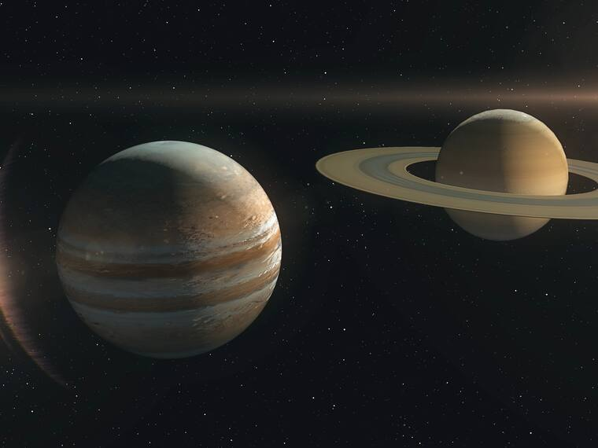
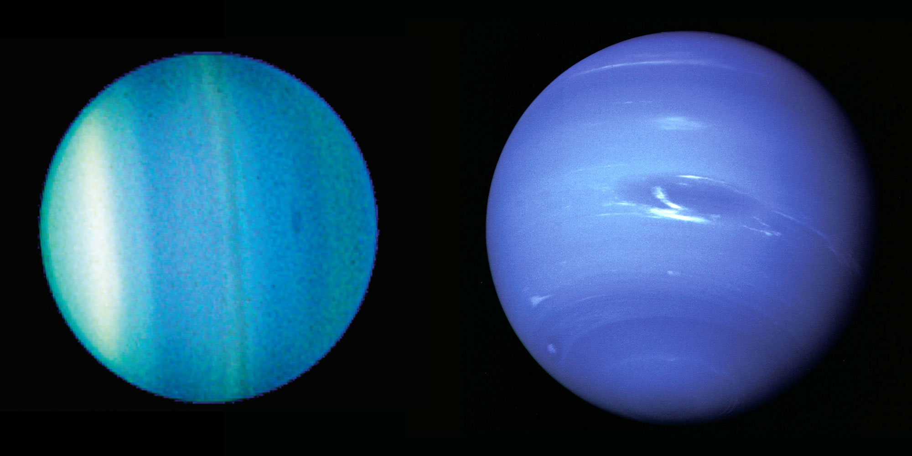

|
|  |
|  |
Los planetas de nuestro sistema solar se clasifican en dos categorías principales. Los primeros son los planetas rocosos, que son los más cercanos al Sol y tienen una superficie sólida. A continuación, separados por el cinturón de asteroides, se encuentran los planetas gigantes. Estos, a su vez, se dividen en gigantes gaseosos y gigantes helados, distinguiéndose por su composición y tamaño.
Estos son los planetas en orden, desde el más cercano al Sol: